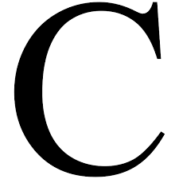

Yazılım Dilleri

C Dili

Javascript Dili

Python Dili

C 1972
Javascript 1997
Python 1991
Java 1995
Yazılım, işlemci tarafından yürütülmek üzere programlanmış dijital bilgisayarların belleğinde saklanan bir dizi programlanmış talimattır. Yazılım insanlık tarihinde yeni bir gelişmedir ve Bilişim Çağının temelini oluşturur. Ada Lovelace'in 19. yüzyılda Charles Babbage'ın Analitik Motoru için hazırladığı programlar genellikle disiplinin kurucusu olarak kabul edilir. Ancak Lovelace ve Babbage'nin zamanının teknolojisinin bilgisayarını yapmak için yetersiz kalması nedeniyle matematikçinin çabaları yalnızca teorik olarak kaldı. Alan Turing, 1935 yılında yazılım için bir teori geliştiren ilk kişi olarak kabul edilir ve bu teori, bilgisayar bilimi ve yazılım mühendisliği olmak üzere iki akademik alanın oluşmasına yol açar. 1940'ların sonlarında, ilk depolanmış programlı dijital bilgisayarlara yönelik ilk nesil yazılımın talimatları, genellikle ana bilgisayar bilgisayarları için yazılan, doğrudan ikili kodla yazılmıştı. Daha sonra, ev bilgisayarının ilerlemesinin yanı sıra modern programlama dillerinin geliştirilmesi, montaj dilinden başlayarak ve işlevsel programlama ve nesne yönelimli programlama paradigmalarıyla devam ederek mevcut yazılımların kapsamını ve kapsamını büyük ölçüde genişletecektir.